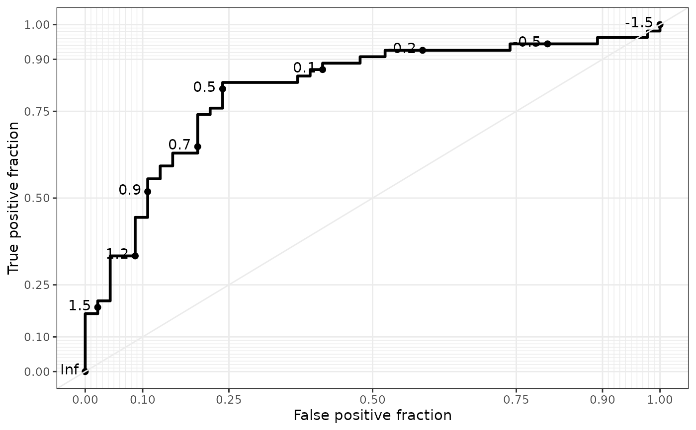
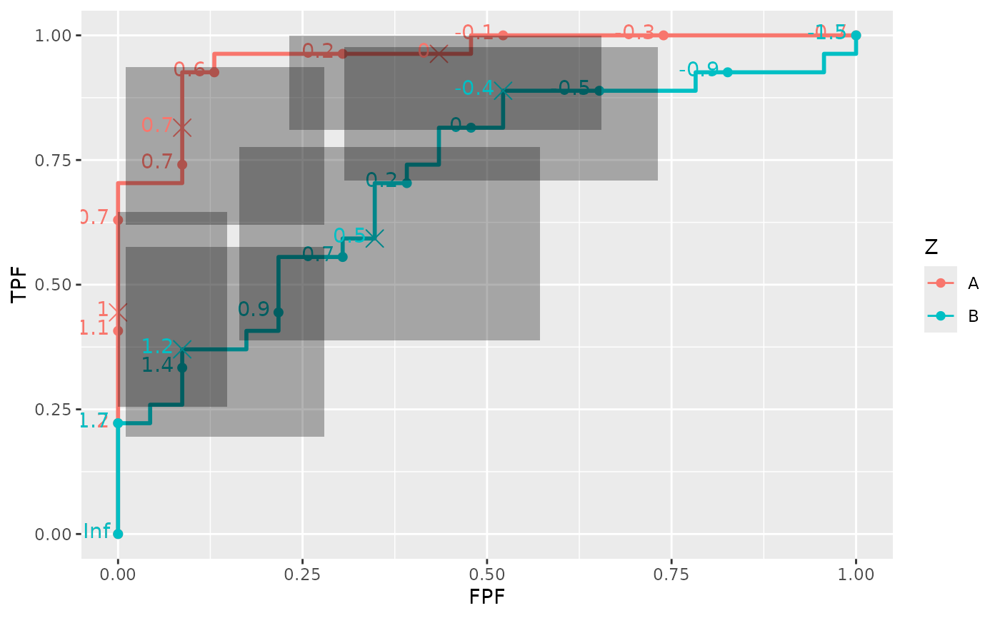
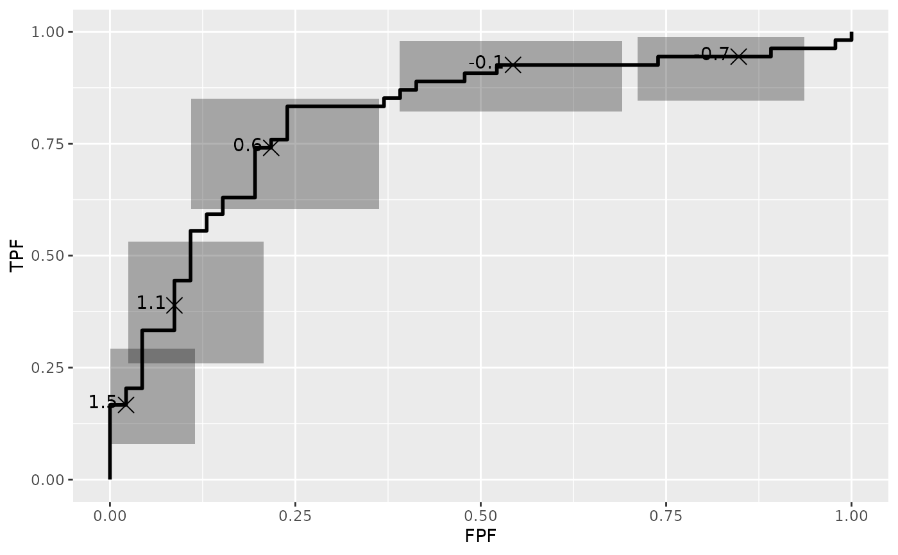

Generate Useful ROC Curve Charts for Print and Interactive Use. This defines a set of stats and geoms for use with ggplot2. In addition, ggplot objects created with these geoms can be exported and turned into interactive plots for use on the web. The interactive features include hovering to display hidden labels, and clicking to reveal confidence regions.
Details
To get started, see geom_roc, geom_rocci, or the examples below. For transforming data, we also provide the convenience function melt_roc.
The vignette contains some examples, along with explanations of the results. To view, run
vignette("examples", package = "plotROC")
Examples
D.ex <- rbinom(50, 1, .5)
rocdata <- data.frame(D = c(D.ex, D.ex),
M = c(rnorm(50, mean = D.ex, sd = .4), rnorm(50, mean = D.ex, sd = 1)),
Z = c(rep("A", 50), rep("B", 50)))
ggplot(rocdata, aes(m = M, d = D)) + geom_roc() + geom_rocci()
# \donttest{
ggplot(rocdata, aes(m = M, d = D)) + geom_roc() + style_roc()

ggplot(rocdata, aes(m = M, d = D, color = Z)) + geom_roc() + geom_rocci()

ggplot(rocdata, aes(m = M, d = D, color = Z)) + geom_roc() + geom_rocci(sig.level = .01)
ggplot(rocdata, aes(m = M, d = D)) + geom_roc(n.cuts = 0) +
geom_rocci(ci.at = quantile(rocdata$M, c(.1, .25, .5, .75, .9)))

ggplot(rocdata, aes(m = M, d = D, color = Z)) + geom_roc() + geom_rocci(linetype = 1)
rocplot <- ggplot(rocdata, aes(m = M, d = D)) + geom_roc()
plot_interactive_roc(rocplot)
plot_interactive_roc(rocplot + aes(color = Z))
plot_interactive_roc(rocplot + facet_wrap( ~ Z))
# }